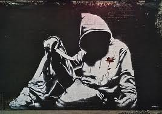
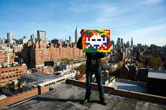
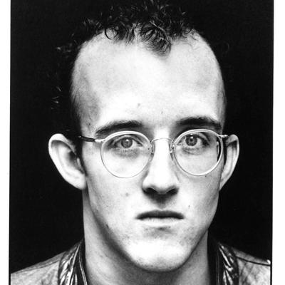

L'art urbain est un Art qui reuni beaucoup de legendes qui ont marqué l'histoire de par leur talent et leurs personnalité. les plus connu sont notament:
Bansky
bansky adore provoquer, choquer voire perturber la société et c'est ce qui fait toute l'importance de son oeuvre. Malgré sa capacité à transgresser les règles, il demeure à ce jour un vrai mystère puisque sa vraie identité n'a jamais été dévoilée.shepard fairey
Frank Shepard Fairey Frank Shepard Fairey est un artiste américain engagé. Peintre, designer graphique et illustrateur, il est né le 15 février 1970 à Charleston en Caroline du Sud. Il vit et travaille actuellement en Californie, à Los Angeles. Il dirige, avec son épouse Amanda, le Studio Number One, agence de publicité.
Invader
Invaders Depuis la fin des années 1990, cet artiste colle, dans toutes les grandes villes du monde, des mosaïques inspirées principalement de Space Invaders, un jeu vidéo culte des années 1970-1980. En 2011, il fête son 1000e invader posé sur la façade de La Générale, un squat artistique situé dans le quartier de Belleville à Paris. Il est proche de deux autres ilustres "street artists" de l'hexagone, Zevs et André. Autre Français de cette liste, JR, travaille à partir de photographies. Il se définit lui-même comme un "activiste urbain" et colle ses clichés dans les favelas brésiliennes, sur des bâtiments voués à la destruction à Shangaï... Son plus grand fait d'arme reste le projet Face 2 Face, une exposition illégale d'immenses portraits d'Israéliens et de Palestiniens, face à face, dans huit villes de chaque côté du mur encerclant la bande de Gaza. Un projet à l'image de l'art urbain, démocratique et pacifiste.
Keith Allen Haring, né le 4 mai 1958 à Reading en Pennsylvanie et mort le 16 février 1990 (à 31 ans) à New York, est un artiste, dessinateur, peintre, sculpteur et activiste américain des années 1980. Keith Haring, fils de Allen et Joan Haring, est l'aîné de trois sœurs. Il passe son enfance à Kutztown. Il a été élevé dans une famille où régnait la discipline et un certain esprit conservateur. Dans sa jeunesse, Keith Haring écoute Aerosmith et les Beatles.